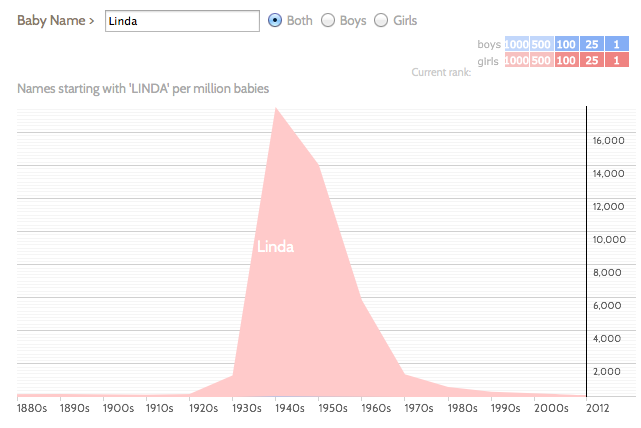

Intuition for Problem 2
Problem 2 on the Take-Home Midterm asks you to:
-
try a lot of names at Baby Name Voyager
(for some examples, see the end of this page).
-
formalize what you see in a mathematical model.
-
check how well your model matches the data.
-
iterate until you are satisfied with the match.
To help with intuition about models, this page provides more information about the data.
What kind of mathematical model?
As the problem says, the model is up to you; it can be anything. Some examples:
-
Gaussian pdf curves, fit with their mean and standard deviation parameters;
-
some other family of pdfs as curves,
using some optimization to
find parameter values (including 'shift' and 'scale') that give a match to the data;
-
Polynomials (fit by regression);
-
Splines, such as those discussed in [ISL] Ch.7.
To get intuition about polynomials and splines, consider e.g. the [ISL] "LAB 7" notebook in the CourseWeb Materials page.
It is also worth looking at the
"Meme Tracking and the Dynamics of the News Cycle"
paper mentioned in the Problem 2 notebook.
Figure 4 in the paper shows some news meme histories from 2008:
The shape of these memes' popularities (number of news articles) should look familiar.
Using Pandas and R on the Baby Names Data
If you are looking for clues about how to get the data in shape for analysis, there is an updated
notebook that uses Pandas for data wrangling on the Baby Names data.
Most of the material is adapted directly from the [PDA] text,
but the notebook shows how to hand off the results to R.
A Large Set of Name Histories
Looking at the Baby Name Voyager site is a great way to get intuition about what a pattern looks like.
Below is also a set of examples that illustrate this.
Baby Name Voyager plots are averages over 10-year periods, so the structure of the popularity surges
are easy to see.
If this doesn't suggest a model to you, attached is a
list of all histories of names with over 100K occurrences with a complete popularity life-cycle (i.e., popularity of the name starts and ends inside the interval 1880-2012).
Colors of the curves reflect the numbers of occurrences --
light blue curves are close to 100K, and magenta curves are in the millions.
This plot also includes a smoothed version of the data -- using spline smoothing --
to highlight the structure of the curve.
Your "gold standard" could be a subset of these names with a shape you can formalize as a model.
If you cannot see a subset of these histories that you can model mathematically, let me know.
This list of histories was not hand-picked.
It was generated by selecting all names with a total number of occurrences above 100K,
for which the values at the ends (in 1880 and 2012) were below 10% of the maximum value.
That is it; there was no special filtering.
This set gives histories from all popular names for which we have complete life-cycles,
where "popular" means more than 100K occurrences.
In other words, visible patterns are not likely to be artifacts of filtering.
Putting this another way, given that no special filtering was used,
and that this data that was generated by many millions of people independently over 130 years,
there is amazing consistency among the histories.
Examples of Histories for Randomly-Selected Names
Below are some randomly-selected names and their results are below.
You can click on images to get to the Name Voyager site.
Note: apparently in order in generate nicer-looking histories,
the Baby Name Voyager site only shows results using 10-year aggregate values.
The SSA data gives values at 1-year intervals, so plots of the data are not as smooth.
Bruce
 Bruce
Bruce
Gary
Gary
Gladys
Gladys
Gloria
Gloria
Harold
Harold
Joshua
Joshua
Linda
Linda
Michelle
 Michelle
Michelle
Terry
Terry
Trinity
Trinity